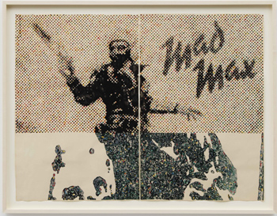

3315 W. Washington Boulevard
Los Angeles, CA 90018

Scripted Spaces
Michael Assiff, David Brooks, Adam Broomberg & Oliver Chanarin
David Detrich, Chris Dorland, Hoël Duret, Adam Helms
Joseph Kendrick, Servane Mary, Ben Noam, Garrett Pruter
Jon Raffman and Kevin Zucker
Curated by Cecelia Stucker
October 9 - November 8, 2014
Opening reception: October 9, 6-9pm
For it’s inaugural exhibition, Martos Gallery Los Angeles is pleased to present Scripted Spaces, a group exhibition curated by Cecelia Stucker. The works included address notions surrounding modalities of control and fantasy in the imagescape. This collection examines advertising vernacular and the subversion of meaning and experience in the sphere of branded space. Each artist ruminates on the image-maker’s ability to simulate or stimulate emotions like desire among consumers by creating vistas of appeal into which the gregarious masses are absorbed and invited to intermingle private desires with collective notions of the ideal.
According to social theorist Norman Klein, “Scripted Spaces” are illusionistic expanses–environments that are programmed to make you believe that you are at the center of a projected narrative. In the plane of branded space, there is a definitive interplay between power and illusion. Looking around the public exteriors of Los Angeles, one finds a plethora of brand messages plastering most empty surfaces; from benches to billboards, building facades and even vehicular bodies. This city is particularly oriented around branded imagery–it is, after all, the epicenter of film, which one could argue is the penultimate industry producing synthesized visuals–but it also a particular scape in which to witness correlations between personal desire and our consumer needs and activities.
There is an element of sociocultural production on the part of advertising executives, branding firms, and the Hollywood machine. These arbiters of social taste and consumption create systems of signs through the commodification of imagery “that structure and transform our experience of the world.” (Hertz & Burton) They manipulate the collective psyche by presenting us with idealized, enticing imagery that plays off our sensory mechanisms and enchant us into coveting. Within Deleuze and Guattaris' “desiring-production”–a place in which consumers intermingle branding efforts within their own psychic fantasies, creating a sphere for social energy to funnel through–a social mechanism materializes that transforms desire into need and need into consumption.
On the most basic levels, the commercial apparatus is designed to “appeal to” and “draw in,” to create an outlet into the realm of imagination. We will align ourselves with the perfect models within seductive design components, lust after iconic brands and follow celebrity endorsements. We exist within an orchestrated space of visual cues and an amalgamation of ephemeral images. This exhibition aims to reveal the alternate space in which advertising vernacular exists and how this hybrid fantasy-reality in turn shifts the DNA of desire, dictating how we as a society consume and ultimately engage with and impact our visual landscapes.
Gallery Hours:
Wednesday - Saturday, 12-5pm
Image: Adam Helms, Untitled (1974), 2014, gouache on antique paper, 30.125 x 40 inches. Courtesy the artist and Marianne Boesky Gallery, New York. © Adam Helms.
Photo credit: Jason Wyche
Martos Gallery Los Angeles
3315 W. Washington Blvd.
Los Angeles, CA 90018